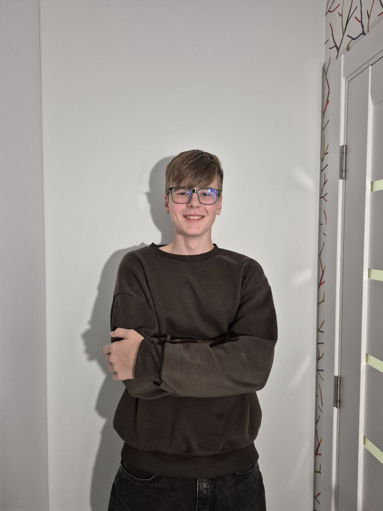
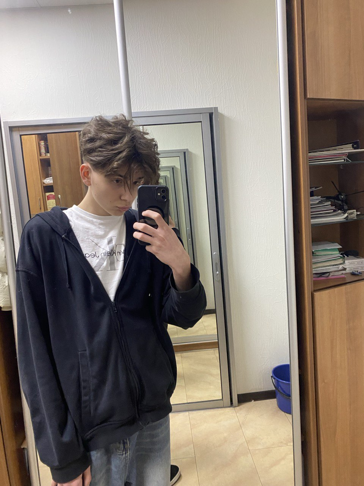
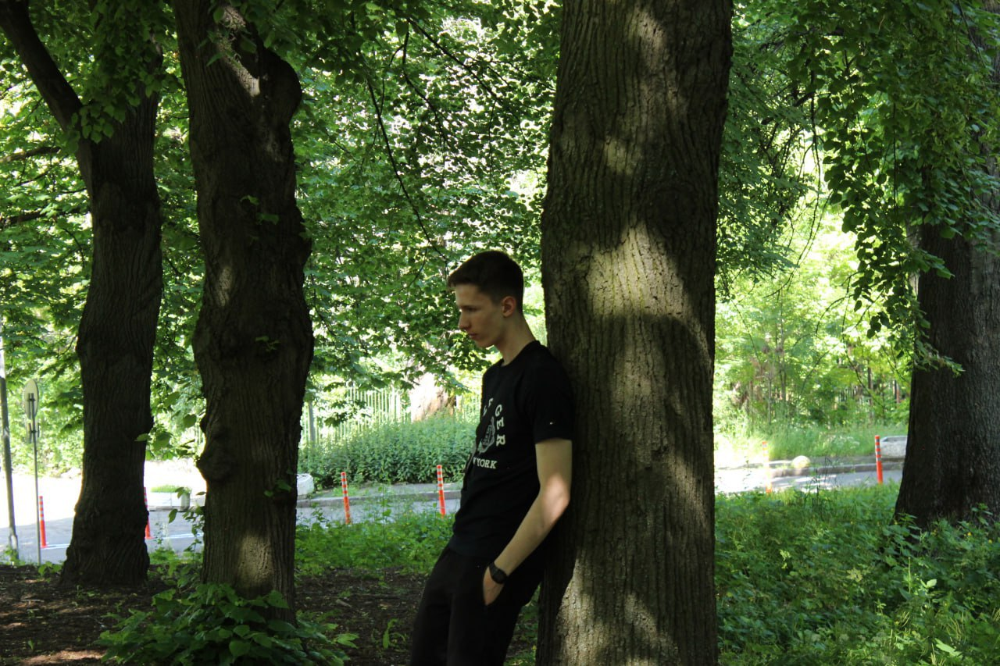
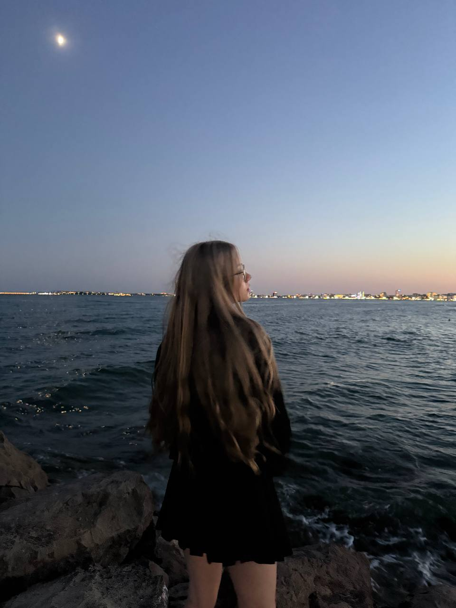
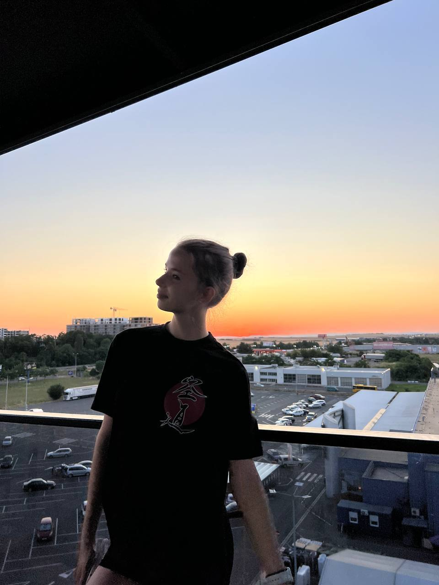
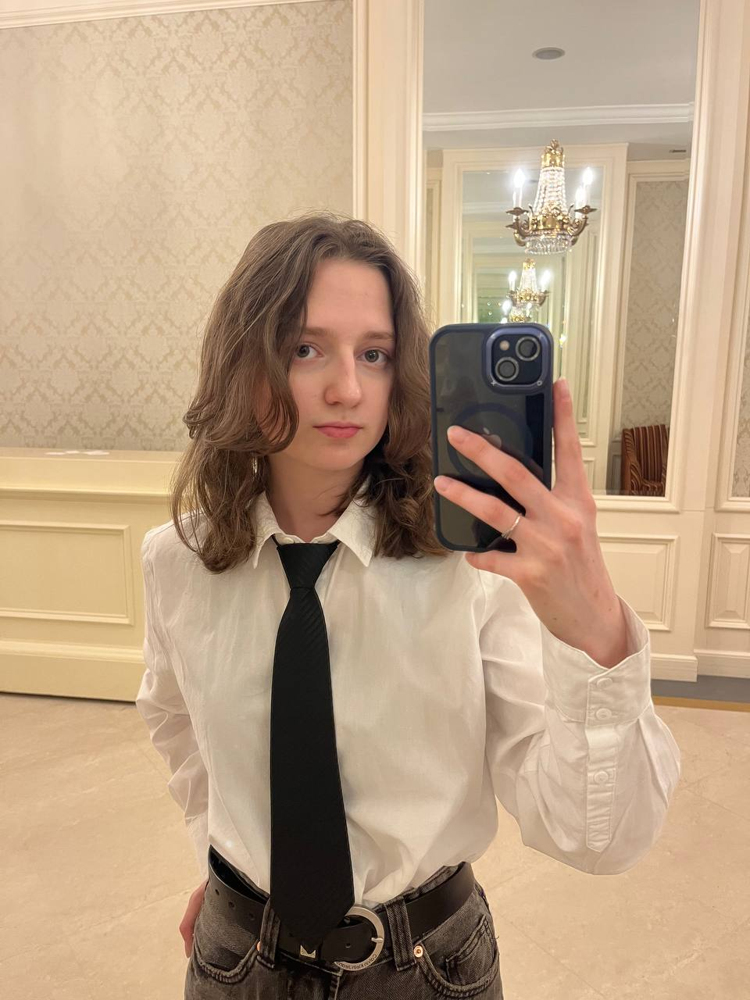
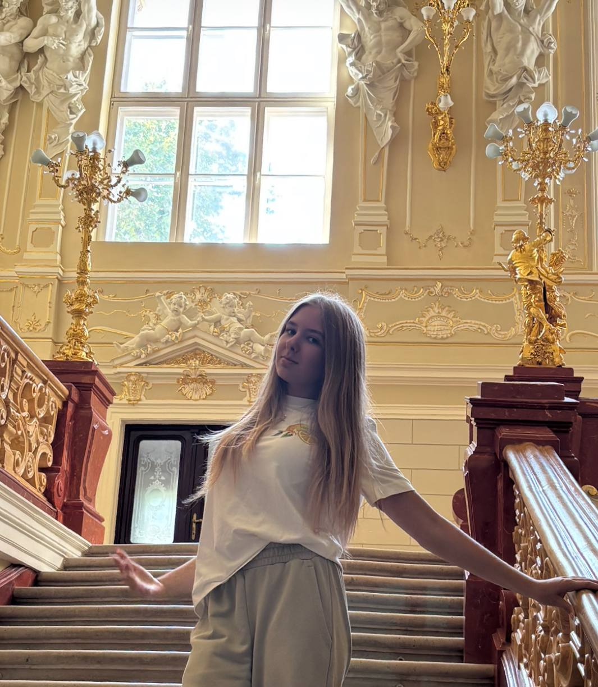
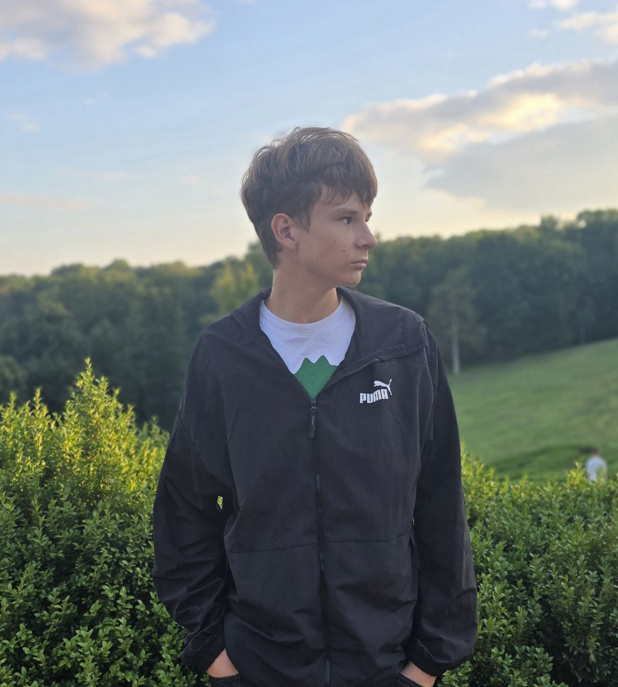
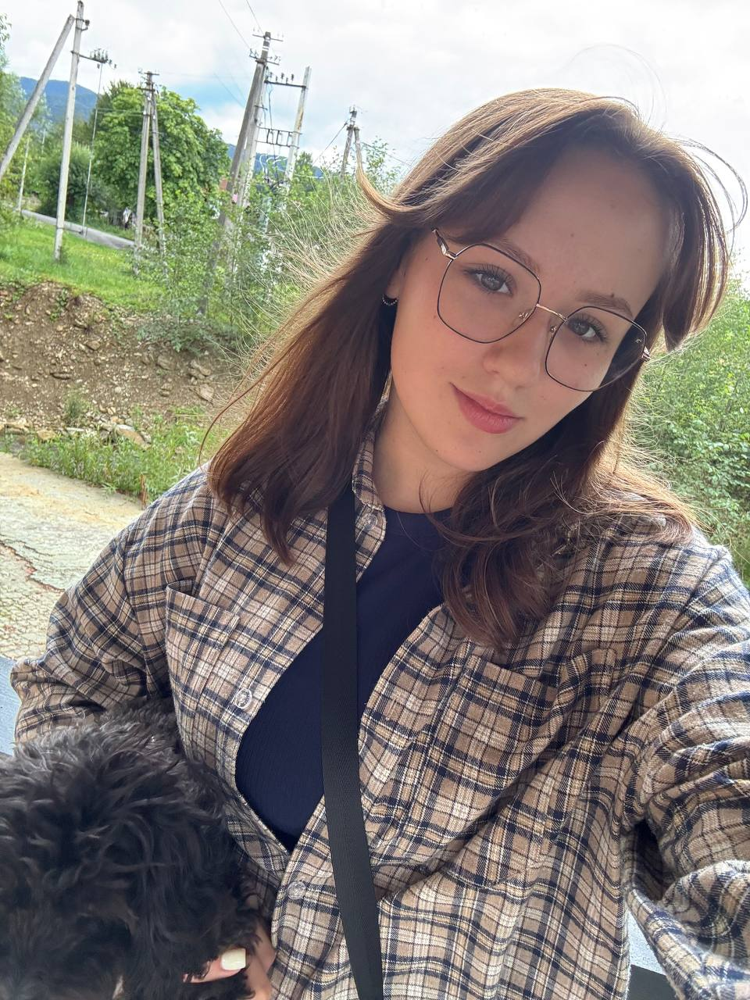
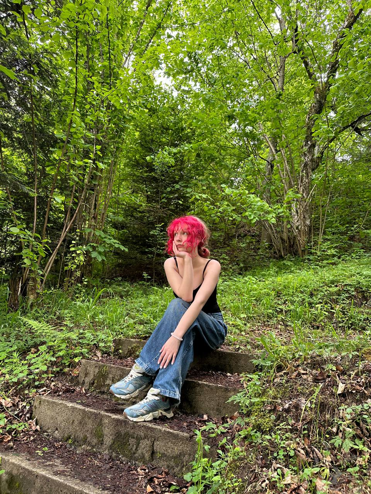

Бондаренко Тимофій
Президент
Вітаю! Мене звати Бондаренко Тимофій, я з 10Б та балотуюсь на посаду президента Ліцею №315. Раніше я вже брав участь у шкільному самоврядуванні, та знаю як це. Багато того, що ми зробили, було моїми ідеями або організацією.

Жуков Тимур
Премʼєр-міністр
Привіт! Мене звати Жуков Тимур, учень 11А класу. Я премʼєр-міністр і ось трошки про мене: Я вмію працювати в команді, відповідально ставлюсь до роботи, завжди виконую всі обовʼязки та прагну почути думку кожного, щоб зробити наш ліцей найкращим.

Григор'єв Сергій
Міністр Внутрішніх справ
Дарова! Мене звати Григор'єв Сергій, учень 10-Б класу. Я бачу парламент як справжню команду, яка працює для розвитку нашого ліцею. Значна частина заходів відбувається в актовій залі, і я докладу зусиль, щоб кожен із них був організований на високому рівні та залишив позитивний слід у житті ліцею.

Савчук Яна
Міністр Екології
Я Савчук Яна, учениця 9-Г класу. Як міністр екології, я відповідатиму за те, щоб в ліцеї було чисто, затишно та приємно для всіх. Для мене важливо, щоб екологія у школі була пов’язана не тільки з чистотою, а й з новими можливостями для всіх нас.

Ненько Дарʼя
Міністр Культури
Привіт! Мене звати Ненько Дарʼя, я з 9Г класу та хочу стати міністром культури. В мене є бажання розвивати життя нашого ліцею, організовувати цікаві творчі заходи та залучати всіх учнів до спільних проєктів
Кочетова Настя
Міністр Освіти
Привіт усім! Мене звати Настя, з 10-А класу, і я займаю посаду міністра освіти. Я вважаю, що освіта має бути цікавою. Саме тому я хочу робити її сучасною й доступною для всіх. Я обіцяю, жодна важлива чи яскрава подія нашого Ліцею не залишиться без уваги!

Даріна Авраменко
Міністр Інформації та Преси
Мене звуть Даріна Авраменко, з 10-Б класу. Я вже ознайомлена з парламентом, і його внутрішньою роботою бо не раз допомагала з заходами. З огляду на це в мене багато свіжих ідей і пропозицій як вдосконалити те, що вже було і буде в цьому році у парламенті!

Ліля Александрович
Міністр Актуальних справ
Всім привіт! Мене звати Ліля Александрович, з 10-Б класу, і я міністр актуальних справ. Як міністр актуальних справ я вірю, що кожен із нас може зробити нашу школу кращою, але для цього потрібна людина, яка вміє слухати, аналізувати й діяти. Саме такою я прагну бути.

Ворчак Степан
Міністр Соціальної політики
Привіт. Мене звати Ворчак Степан, з 10-А класу і я міністр Соціальної політики. Моя мета забезпечення соціальної справедливості, щоб усі учні мали рівні можливості в нашому ліцеї. Я хочу змінити наш ліцей на краще, тому буду організовувати соціальні проєкти та акції.

Приліпко Олександра
Міністр Зовнішніх справ
Всім привіт! Я Приліпко Олександра, учениця 9-Б класу. Хочу увійти до шкільного парламенту в ролі міністра зовнішніх справ, щоб об’єднувати класи, організовувати спільні проєкти та налагоджувати зв’язки з іншими школами. Разом зробимо наше шкільне життя яскравішим і дружнішим!
Міщук Поліна
Зам міністр Екології
Привіт! Мене звати Міщук Поліна, учениця 9-Б класу. Я брала участь у багатьох шкільних заходах, допомагала ліцею та захищала власні проєкти. Тепер хочу зробити шкільне життя ще цікавішим і змістовнішим у парламенті.

Єгорова Софʼя
Зам міністр Освіти
Мене звати Єгорова Софʼя, я з 10-Б класу, займаю посаду зам. міністра освіти. Завдяки нашого майбутнього пана президента я ознайомлена с парламентом, та дуже хочу змінити наш Ліцей у краще русло. Завжди можу придумати цікаві заходи та покращити шкільне життя для наших учнів.
Єрмоленко Мілан
Зам міністр Внутрішніх справ
Вітаю! Я Єрмоленко Мілан з 9 Г, талістман та мотиваційний лідер команди. В мене є старший брат Натальчук Мирослав який вже має великий досвід в парламенті, а також в минулій школі я був премʼєр міністром.
Верещака Оксана
Зам міністр Культури
Привіт. Мене звати Верещака Оксана, з 9-Г класу і я хочу стати заступником міністра культури. Моя мета допомогти організовувати цікаві заходи, щоб нашим учням було ще веселіше в нашому ліцеї. Я дуже активна та приймала участь у багатьох конкурсах, а також зможу знайти спільну мову з усіма
Мельник Каріна
Зам міністр Інформації та Преси
Мене звати Мельник Каріна, учениця 9-Б класу та учасниця команди. Я буду відповідати за поширення новин і рішень шкільного парламенту серед учнів та вчителів. Для мене важливо постійно організовувати та вести шкільні блоги, сторінки у соцмережах чи інформаційні стенди.